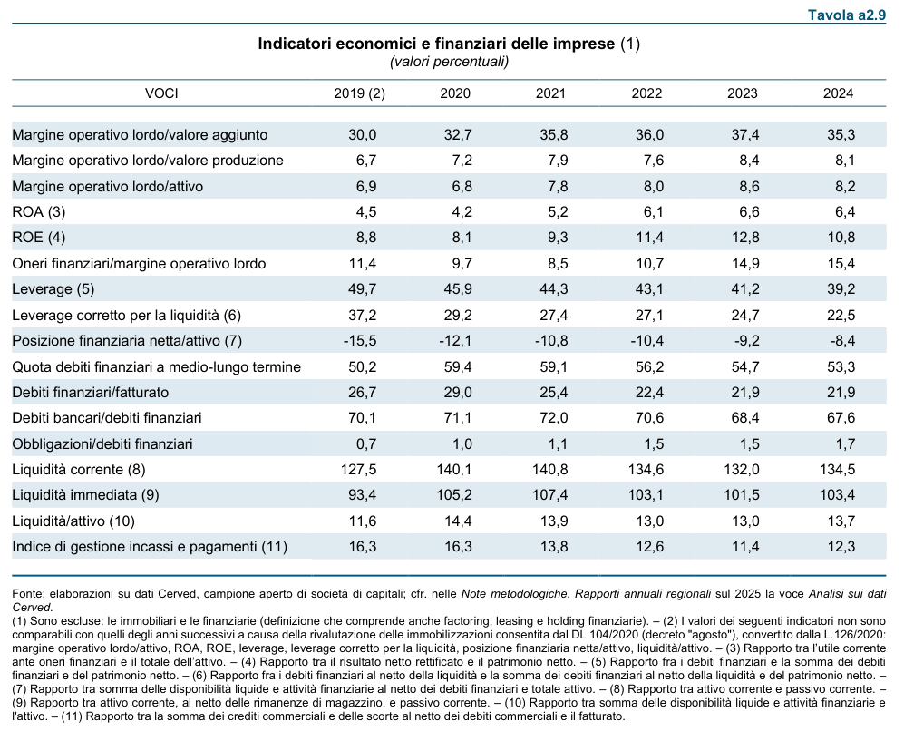
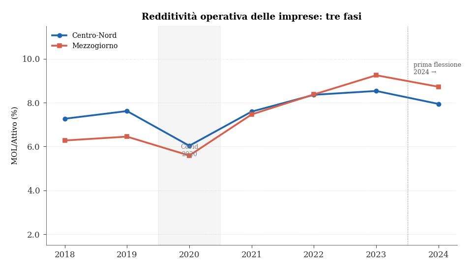
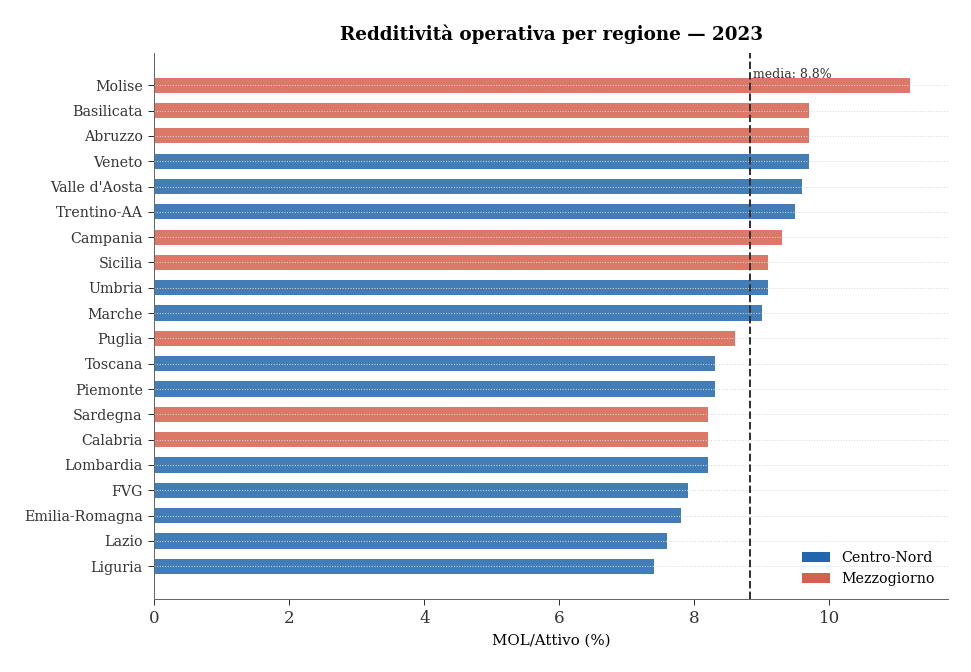
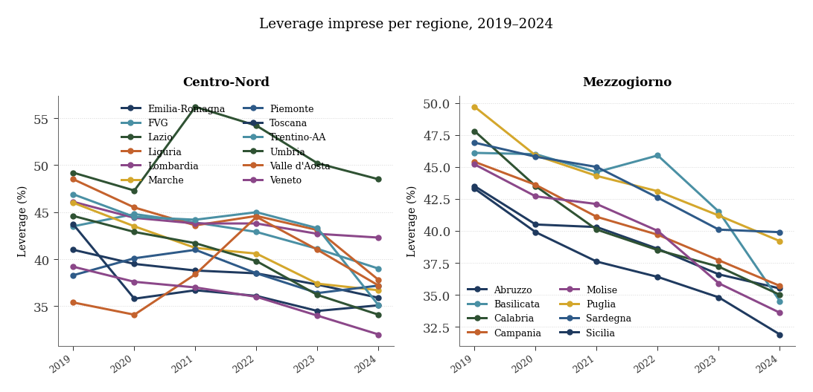
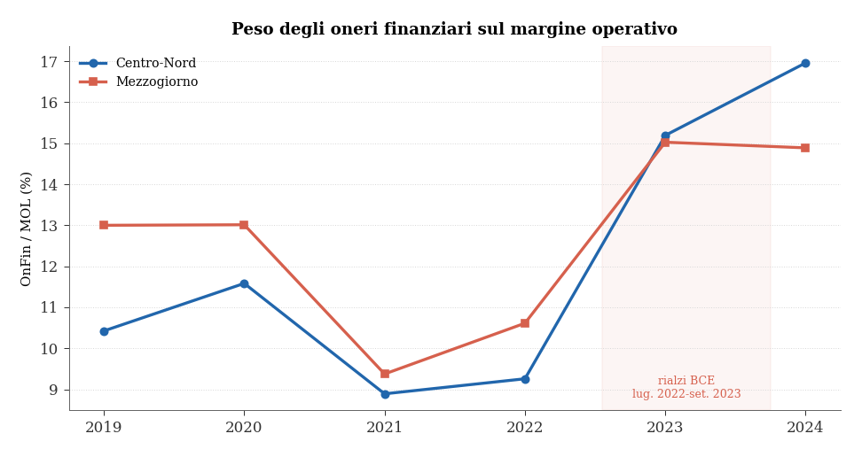
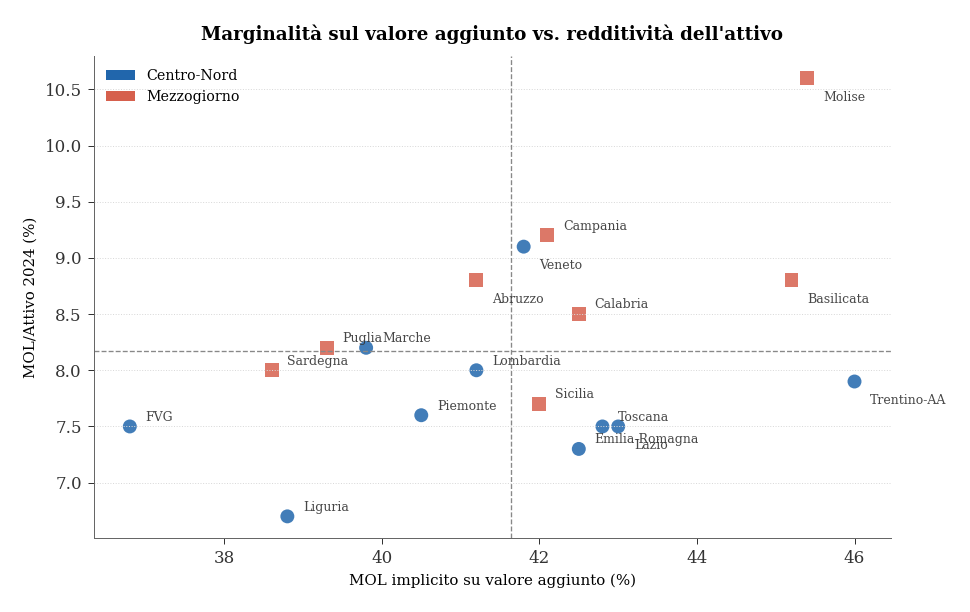

La salute finanziaria delle imprese regionali
Redditività operativa, leva e oneri dal ciclo Covid alla normalizzazione 2024
Paolo Volterra ![]()
La tavola sugli indicatori economici e finanziari delle imprese nelle Economie Regionali (Banca d’Italia, fonte Cerved; A2.9/A2.x secondo l’edizione) documenta l’evoluzione della redditività operativa e della struttura finanziaria delle società di capitali italiane per regione. La catalogazione delle monografie mostra che la tavola entra nella collana nel 2017 e che le edizioni 2019 ricostruiscono serie storiche fino al 2007. La parte quantitativa di dettaglio di questo studio consolida le edizioni disponibili in un’unica serie che copre il 2007–2024 per più indici regionali, ricostruita a partire da circa 60 pubblicazioni. Il margine operativo lordo in rapporto all’attivo (MOL/Attivo) tocca il minimo recente nel 2020, rimbalza nel 2021-2023 in un contesto coerente con l’effetto dei prezzi nominali su ricavi e costi, e segna nel 2024 una flessione compatibile con la normalizzazione dei prezzi e con l’aumento del costo del lavoro. Il leverage (debiti finanziari / totale attivo) segue una traiettoria prevalentemente discendente nel tratto 2019–2024 del dataset operativo unificato.
imprese regionali, MOL, leverage, Cerved, Banca d’Italia, Economie Regionali, bilanci
1 Fonti e metodologia
La tavola sugli Indicatori economici e finanziari delle imprese è una tavola dell’appendice statistica del capitolo 2 dei rapporti annuali delle Economie Regionali della Banca d’Italia [1].1 La fonte primaria è l’archivio Cerved, che raccoglie i bilanci di circa 180.000 società di capitali italiane, con una copertura regionale di 9.000–11.000 unità per le regioni più grandi. La tavola riporta undici indicatori di bilancio (tra cui MOL/Attivo, MOL/VA, Leverage, Liquidità/Attivo, PFN/Attivo, OnFin/MOL, DebFin/Fatt, DebBanc/DebFin, QuotaMLT); questa analisi si concentra sui tre che meglio riassumono redditività operativa, struttura finanziaria e costo del debito: MOL/Attivo, Leverage e OnFin/MOL. I dati usati nell’analisi non dipendono dalla numerazione formale A2.9: sono estratti dalla tavola sostanziale “Indicatori economici e finanziari delle imprese” in tre serie semestrali di PDF delle Economie Regionali. Per il periodo recente la base aggiornata copre 20 regioni per il 2018–2024, con il dato 2024 dell’Umbria integrato da una tavola Cerved-Mediocredito Centrale pubblicata separatamente dall’edizione regionale [2].
Una precisazione sul ritardo temporale della fonte: i rapporti annuali regionali sono pubblicati a giugno dell’anno \(t\) e analizzano l’esercizio \(t-1\) per i dati di bilancio Cerved, che richiedono circa 12–18 mesi di consolidamento. I dati del primo semestre 2026 riportano quindi bilanci 2024.
La copertura non è uniforme per tutti gli indicatori. La serie che ne risulta combina le edizioni semestrali disponibili e quindi mostra finestre diverse per anno e indicatore. Tutti i grafici e le tabelle sugli indicatori Cerved di questo studio derivano da un’unica serie consolidata dall’autore.
| Indicatore | Regioni | Anno min | Anno max | Osservazioni |
|---|---|---|---|---|
| MOL/Attivo | 20 | 2007 | 2024 | 347 |
| Leverage | 20 | 2007 | 2024 | 316 |
| OnFin/MOL | 20 | 2007 | 2024 | 319 |
| MOL/VA | 20 | 2007 | 2024 | 343 |
| Liquidita/Attivo | 20 | 2007 | 2024 | 153 |
| PFN/Attivo | 20 | 2007 | 2024 | 261 |
| DebFin/Fatt | 20 | 2007 | 2024 | 230 |
| DebBanc/DebFin | 20 | 2007 | 2024 | 209 |
| QuotaMLT | 20 | 2007 | 2024 | 189 |
2 Perimetro storico allargato della tavola
La tavola non nasce con le edizioni più recenti. La catalogazione delle monografie regionali oggi disponibili mostra che la prima occorrenza è nel 2017; già quella tavola presenta una ricostruzione retrospettiva, con anni dal 2007 al 2015. Il salto più importante avviene nel 2019 [3]: in quell’edizione la tavola è presente in modo molto più diffuso nelle monografie regionali e, nella maggior parte delle occorrenze rilevate, ricostruisce gli indicatori dal 2007 al 2017.
Questo amplia il perimetro dello studio. La lettura 2018–2024 resta utile perché è il tratto più recente e più direttamente raccordabile con il ciclo Covid-inflazione-tassi; tuttavia non esaurisce la profondità informativa della fonte. Il punto rilevante non è il numero A2.9, ma il riconoscimento della stessa tavola Cerved nelle diverse edizioni semestrali; in questo modo si può coprire la serie lunga 2007–2024 su più indici regionali, sufficiente per studiare tre regimi: crisi finanziaria e debito sovrano, lunga ripresa pre-Covid, ciclo Covid-inflazione-tassi.
La serie 2007–2024 utilizzata in questo studio ordina, per ogni anno/regione/indicatore, la versione più recente disponibile tra le edizioni consultate [4].
2.1 La tavola nell’originale: un esempio
L’immagine seguente riproduce un esempio della tavola “Indicatori economici e finanziari delle imprese” dal rapporto annuale della Puglia (edizione 2026H1, pagina 86), dove la tavola è numerata a2.9. La struttura informativa è comune alle tavole Cerved regionali, anche se la numerazione e la posizione nell’appendice possono variare: le righe riportano gli indicatori di bilancio (MOL/Attivo, Leverage, ecc.) per le società di capitali della regione nel triennio corrente e in confronto con i valori pre-pandemia. La fonte è l’archivio Cerved; l’universo di riferimento include circa 10.000 società di capitali con sede in Puglia.

3 Il ciclo recente 2018–2024: tre fasi
Nel tratto recente coperto dal dataset operativo, la storia del MOL/Attivo delle imprese regionali italiane si articola in tre fasi nettamente distinguibili, ciascuna guidata da un fattore macroeconomico dominante. Questa non è l’intera storia disponibile nelle monografie: è il sotto-periodo più adatto a leggere il ciclo Covid, il rimbalzo nominale, il rialzo dei tassi e la normalizzazione del 2024.
La fase pre-Covid (2018–2019) offre la baseline di riferimento: una redditività operativa stabile, con valori generalmente compresi tra 5 e 9 punti percentuali secondo la regione. Il range inter-regionale riflette differenze strutturali nella composizione settoriale e nell’intensità patrimoniale.
Lo shock Covid del 2020 produce il minimo strutturale di tutto il periodo. Il calo è generalizzato ma eterogeneo: in Sardegna si tocca il 2,6% (da 4,7% nel 2019), mentre regioni come Puglia, Abruzzo e Calabria mostrano flessioni più contenute. La pandemia non ha colpito i bilanci in modo uniforme: le regioni con un peso maggiore del turismo internazionale e della ristorazione hanno subito perdite più severe.
Il rimbalzo 2021–2023 è il tratto più sorprendente della serie. A partire dal 2021, e con accelerazione nel 2022-2023, il MOL/Attivo supera sistematicamente i livelli pre-Covid in tutte le regioni. Il 2023 è l’anno di picco del periodo osservato per la quasi totalità delle regioni. Il profilo è coerente con un meccanismo nominale: l’inflazione post-Covid ha sostenuto i fatturati mentre alcuni costi, in particolare quelli del lavoro regolati dai contratti collettivi, si sono adeguati con ritardo. Il risultato è un ampliamento dei margini che non corrisponde necessariamente a un miglioramento della produttività reale.
La prima flessione del 2024 chiude il ciclo e segnala un cambio di regime. I dati MOL/Attivo 2024 nel dataset operativo unificato mostrano una riduzione quasi generalizzata rispetto al 2023, compresa tra 0,1 e 1,6 pp; l’unica eccezione è la Calabria (+0,3 pp). La dinamica è coerente con due canali: da un lato, la normalizzazione dell’inflazione riduce il vantaggio sui fatturati nominali; dall’altro, i rinnovi dei contratti nazionali di lavoro (CCNL) del biennio 2023-2024 hanno aumentato la quota di valore aggiunto assorbita dal costo del lavoro [5].

4 Eterogeneità regionale al picco del ciclo
Il confronto regionale di dettaglio è condotto sul 2023, non sul 2024, perché è il punto di massimo del ciclo di redditività osservato: consente quindi di leggere l’eterogeneità territoriale nel momento in cui il rimbalzo post-Covid e l’effetto nominale dell’inflazione sono più visibili. Entrambi gli anni hanno oggi copertura a 20 regioni nella fonte unica aggiornata; il 2024 misura la normalizzazione successiva, ma resta meno adatto come sezione trasversale principale perché non è il picco del ciclo.
Nel 2023 il Molise registra il valore più elevato (11,2%), seguito da Abruzzo, Veneto e Basilicata (9,7%). All’estremo inferiore si collocano Liguria (7,4%) e Lazio (7,6%), comunque su livelli superiori ai minimi del 2020.
Tra le regioni del Mezzogiorno emerge un dato contro-intuitivo: Molise, Abruzzo, Campania, Basilicata e Sicilia nel 2023 mostrano un MOL/Attivo superiore alla media del Centro-Nord (circa 8,5%). Questo risultato non segnala un primato produttivo, bensì una caratteristica strutturale del capitalismo meridionale: le imprese del Mezzogiorno sono mediamente meno asset-intensive — hanno meno capitale fisso per addetto e attivi patrimoniali più contenuti rispetto ai ricavi — e quindi lo stesso MOL assoluto genera un rapporto MOL/Attivo più elevato.

5 La tabella completa: copertura regionale 2018–2024
La tabella riporta la serie di MOL/Attivo usata nello studio. L’ordine segue la sequenza territoriale/NUTS della collana, così da rendere immediato il confronto con la numerazione delle pubblicazioni regionali. Le celle vuote indicano anni non disponibili nella fonte unica aggiornata; il 2024 è ora disponibile per tutte le 20 regioni.
| Regione | 2018 | 2019 | 2020 | 2021 | 2022 | 2023 | 2024 |
|---|---|---|---|---|---|---|---|
| Piemonte | 6.4 | 6.4 | 4.8 | 6.7 | 7.3 | 8.3 | 7.6 |
| Valle d'Aosta | 7.7 | 9.2 | 7.0 | 9.2 | 10.0 | 9.6 | 9.3 |
| Lombardia | 7.6 | 7.5 | 6.1 | 7.6 | 8.0 | 8.2 | 8.0 |
| Trentino-AA | 8.4 | 8.4 | 7.2 | 9.0 | 10.5 | 9.5 | 7.9 |
| Veneto | 8.3 | 8.2 | 6.7 | 8.6 | 9.0 | 9.7 | 9.1 |
| FVG | 7.9 | 7.7 | 5.8 | 7.7 | 8.7 | 7.9 | 7.5 |
| Liguria | 6.3 | 6.2 | 5.5 | 7.1 | 7.5 | 7.4 | 6.7 |
| Emilia-Romagna | 6.6 | 6.3 | 5.3 | 6.8 | 7.2 | 7.8 | 7.3 |
| Toscana | 7.6 | 9.6 | 6.2 | 7.7 | 8.6 | 8.3 | 7.5 |
| Umbria | 6.6 | 6.7 | 5.8 | 6.7 | 7.4 | 9.1 | 8.7 |
| Marche | 6.5 | 6.4 | 5.8 | 7.7 | 8.4 | 9.0 | 8.2 |
| Lazio | 7.3 | 8.8 | 6.2 | 6.3 | 7.7 | 7.6 | 7.5 |
| Abruzzo | 6.3 | 6.6 | 5.9 | 7.5 | 8.3 | 9.7 | 8.8 |
| Molise | 6.7 | 7.4 | 6.4 | 8.1 | 8.3 | 11.2 | 10.6 |
| Campania | 6.3 | 7.0 | 5.7 | 7.6 | 8.3 | 9.3 | 9.2 |
| Puglia | 6.7 | 6.9 | 6.8 | 7.8 | 8.0 | 8.6 | 8.2 |
| Basilicata | 7.2 | 6.8 | 5.7 | 7.7 | 7.9 | 9.7 | 8.8 |
| Calabria | 5.8 | 6.2 | 5.9 | 7.2 | 8.3 | 8.2 | 8.5 |
| Sicilia | 5.4 | 6.0 | 5.7 | 7.5 | 8.3 | 9.1 | 7.7 |
| Sardegna | 5.8 | 4.7 | 2.6 | 6.3 | 9.6 | 8.2 | 8.0 |
6 Il leverage: evidenza nel dataset unificato
Parallelamente alla dinamica dei margini, il dataset operativo unificato mostra nel periodo 2019–2024 una traiettoria prevalentemente discendente del leverage (debiti finanziari / totale attivo) nelle regioni con tavola Cerved disponibile. In termini interpretativi, la riduzione del leverage va comunque letta insieme a PFN/Attivo e Liquidità/Attivo per distinguere deleveraging reale e riduzione apparente del debito netto.

Il deleveraging non è uniforme. Nel pannello del Centro-Nord spiccano due discontinuità: il Lazio sale bruscamente nel 2021 e poi rientra gradualmente; la Valle d’Aosta raggiunge invece un picco nel 2022 prima di correggere. Nel pannello del Mezzogiorno il profilo più discontinuo è quello della Basilicata, che resta elevata nel 2022 e poi scende rapidamente nel 2023-2024. Lo studio non attribuisce queste rotture a una singola causa: trattandosi di aggregati regionali Cerved, l’interpretazione più prudente è che riflettano una combinazione di composizione settoriale, peso di poche imprese grandi, variazioni del denominatore patrimoniale e dinamica della liquidità/debito netto.
Il Lazio appare tra le regioni con leverage più elevato. La lettura è coerente con quanto osservato sopra sulla possibile intensità patrimoniale dell’economia romana, ma va verificata con indicatori diretti di Attivo/VA o Attivo/addetto.
| Regione | 2019 | 2020 | 2021 | 2022 | 2023 | 2024 |
|---|---|---|---|---|---|---|
| Piemonte | 38.3 | 40.1 | 41.0 | 38.5 | 36.4 | 37.2 |
| Valle d'Aosta | 35.4 | 34.1 | 38.4 | 44.5 | 41.0 | 37.2 |
| Lombardia | 46.1 | 44.4 | 43.8 | 43.8 | 42.7 | 42.3 |
| Trentino-AA | 46.9 | 44.5 | 44.2 | 45.0 | 43.3 | 35.1 |
| Veneto | 39.2 | 37.6 | 37.0 | 36.0 | 34.0 | 32.0 |
| FVG | 43.5 | 44.8 | 43.9 | 42.9 | 41.1 | 39.0 |
| Liguria | 48.5 | 45.5 | 43.6 | 44.6 | 43.1 | 37.8 |
| Emilia-Romagna | 41.0 | 39.5 | 38.8 | 38.5 | 37.3 | 35.9 |
| Toscana | 43.7 | 35.8 | 36.7 | 36.1 | 34.5 | 35.1 |
| Umbria | 44.6 | 42.9 | 41.7 | 39.8 | 36.2 | 34.1 |
| Marche | 46.0 | 43.5 | 41.2 | 40.6 | 37.4 | 36.7 |
| Lazio | 49.2 | 47.3 | 56.2 | 54.2 | 50.2 | 48.5 |
| Abruzzo | 43.5 | 40.5 | 40.3 | 38.6 | 36.6 | 35.5 |
| Molise | 45.2 | 42.7 | 42.1 | 40.0 | 35.9 | 33.6 |
| Campania | 45.4 | 43.6 | 41.1 | 39.7 | 37.7 | 35.7 |
| Puglia | 49.7 | 45.9 | 44.3 | 43.1 | 41.2 | 39.2 |
| Basilicata | 46.1 | 46.0 | 44.6 | 45.9 | 41.5 | 34.5 |
| Calabria | 47.8 | 43.5 | 40.1 | 38.5 | 37.2 | 35.0 |
| Sicilia | 43.3 | 39.9 | 37.6 | 36.4 | 34.8 | 31.9 |
| Sardegna | 46.9 | 45.8 | 45.0 | 42.6 | 40.1 | 39.9 |
7 Il costo della leva nel ciclo BCE 2022–2024
Il rapporto OnFin/MOL — gli oneri finanziari in percentuale del margine operativo lordo — misura quanta parte del reddito operativo viene assorbita dal servizio del debito. Questa grandezza offre una lettura complementare al leverage: non è solo quanto si è indebitati, ma quanto costa quel debito rispetto alla capacità di generare cassa.

Nei dati emerge un doppio movimento 2022–2024. Il ciclo di rialzo dei tassi ufficiali BCE va collocato tra luglio 2022 e settembre 2023 [6].2 Nel 2022, gli oneri finanziari in rapporto al MOL calano nonostante l’avvio del rialzo: il profilo è coerente con un MOL sostenuto dall’inflazione nominale e con un repricing del debito ancora ritardato. A partire dal 2023-2024, tuttavia, il meccanismo si inverte: il costo del debito a tasso variabile o a rinnovo più frequente aumenta, mentre il MOL si normalizza verso il basso. Il risultato è un aumento del rapporto OnFin/MOL nel 2023-2024 nelle regioni osservate.
Nel campione osservato Friuli-Venezia Giulia e Lazio mostrano valori elevati di OnFin/MOL nel 2024. Questo è coerente con una maggiore esposizione al costo della leva, ma non va letto da solo come graduatoria definitiva di vulnerabilità regionale: servono anche struttura del debito, quota a tasso variabile e composizione dimensionale delle imprese.
8 Raccordo con il Frame Territoriale Anticipato ISTAT
I dati Cerved sui bilanci forniscono la fotografia ex post della struttura finanziaria delle imprese. Per capire perché il MOL/Attivo varia tra regioni è utile affiancare un dato sul lato operativo: quanta parte del valore aggiunto viene assorbita dal costo del lavoro e qual è la produttività per addetto. Queste informazioni provengono dal Frame Territoriale Anticipato (FTA) ISTAT, qui usato come fonte esterna di raccordo [7]. I valori Cerved restano quelli della serie storica utilizzata nello studio; il raccordo con il FTA impiega esclusivamente le sue variabili operative (CdL/VA, VA/addetto).
La relazione contabile di riferimento è:
\[\frac{\mathrm{MOL}}{\mathrm{Attivo}} = \left(1 - \frac{\mathrm{CdL}}{\mathrm{VA}}\right) \times \frac{\mathrm{VA}}{\mathrm{Attivo}}\]
Il FTA misura CdL/VA e VA/addetto; Cerved/Banca d’Italia misura MOL/Attivo. Lo scatter seguente non è una stima causale: serve a separare il margine operativo sul valore aggiunto dalla densità patrimoniale implicita nel denominatore Attivo.
| Regione | VA/addetto | CdL/VA % | MOL impl. % | MOL/Attivo 2024 % |
|---|---|---|---|---|
| Piemonte | 64,570 | 59.5 | 40.5 | 7.6 |
| Lombardia | 76,736 | 58.8 | 41.2 | 8.0 |
| Trentino-AA | 71,008 | 54.0 | 46.0 | 7.9 |
| Veneto | 64,551 | 58.2 | 41.8 | 9.1 |
| FVG | 59,371 | 63.2 | 36.8 | 7.5 |
| Liguria | 57,845 | 61.2 | 38.8 | 6.7 |
| Emilia-Romagna | 69,299 | 57.5 | 42.5 | 7.3 |
| Toscana | 59,267 | 57.2 | 42.8 | 7.5 |
| Marche | 52,923 | 60.2 | 39.8 | 8.2 |
| Lazio | 67,183 | 57.0 | 43.0 | 7.5 |
| Abruzzo | 53,500 | 58.8 | 41.2 | 8.8 |
| Molise | 50,547 | 54.6 | 45.4 | 10.6 |
| Campania | 48,503 | 57.9 | 42.1 | 9.2 |
| Puglia | 43,898 | 60.7 | 39.3 | 8.2 |
| Basilicata | 52,869 | 54.8 | 45.2 | 8.8 |
| Calabria | 40,819 | 57.5 | 42.5 | 8.5 |
| Sicilia | 45,239 | 58.0 | 42.0 | 7.7 |
| Sardegna | 45,048 | 61.4 | 38.6 | 8.0 |

Tre letture sono utili per interpretare i dati Cerved. Primo, un CdL/VA elevato comprime il margine operativo implicito sul valore aggiunto; questo aiuta a leggere perché alcune regioni hanno MOL/Attivo più contenuti anche quando la produttività per addetto non è particolarmente bassa. Secondo, il Lazio non va liquidato come semplice regione a bassa redditività operativa: l’ipotesi più plausibile resta un denominatore patrimoniale elevato, coerente con una struttura produttiva più capital-intensive. Terzo, il Mezzogiorno può mostrare MOL/Attivo nella media o superiore anche con produttività più bassa, perché molte economie regionali meridionali sono meno asset-intensive.
9 Limiti del dato aggregato regionale
La tavola Cerved è molto utile come benchmark territoriale, ma resta un dato aggregato. Due cautele sono essenziali.
Composizione settoriale. Il confronto diretto tra regioni può confondere effetto territoriale ed effetto ATECO. Una regione con maggiore peso di servizi, costruzioni, commercio o agroalimentare può mostrare un MOL/Attivo elevato non perché le imprese siano più efficienti, ma perché l’attivo patrimoniale richiesto per unità di output è più basso. All’opposto, manifattura avanzata, utility, infrastrutture e holding tendono a gonfiare il denominatore. Per isolare un “effetto territorio” puro servirebbe una scomposizione per settore.
Composizione dimensionale. La media regionale aggrega PMI, grandi imprese e gruppi societari. Questo può mascherare vulnerabilità interne: una regione con grandi imprese resilienti può avere un OnFin/MOL medio stabile anche se molte PMI locali subiscono un repricing del credito molto più severo. Di conseguenza la tavola Cerved sugli indicatori economici e finanziari è un buon benchmark di contesto, ma non sostituisce l’analisi micro di bilancio, settore, dimensione e struttura effettiva del debito.
10 Sintesi e prospettive
L’analisi della tavola A2.x sulle regioni osservate nel periodo 2018–2024 restituisce un quadro articolato in cui i fattori macroeconomici di ciclo (pandemia, inflazione, politica monetaria) si sovrappongono a differenziali strutturali persistenti che riflettono la composizione produttiva e patrimoniale delle economie regionali. Il CSV operativo unificato consente inoltre una lettura dal 2007 al 2024, cioè dall’immediato pre-crisi finanziaria alla fase post-rialzo dei tassi.
Il ciclo post-Covid ha in larga misura beneficiato anche le regioni strutturalmente più deboli: il rimbalzo 2021-2023 è generalizzato e i valori 2023 del Mezzogiorno superano i livelli pre-pandemici. Questa convergenza ciclica va però interpretata con cautela: è coerente con un effetto dell’inflazione nominale sui margini, non necessariamente con un recupero di produttività.
Il 2024 chiude il ciclo espansivo. I dati disponibili per il MOL/Attivo indicano una flessione quasi generalizzata, con un calo medio di circa 0,6 pp. Non si tratta di una crisi, ma di una normalizzazione verso livelli che rimangono comunque superiori ai minimi del 2020. La vera sfida per il 2025-2026 — non ancora catturata dai bilanci Cerved — sarà la capacità delle imprese di assorbire i maggiori costi del lavoro attraverso guadagni di produttività, piuttosto che scaricandoli sui prezzi.
In pratica le edizioni disponibili si raggruppano in tre blocchi cronologici tra loro coerenti: l’edizione 2019 copre il 2007–2017, l’edizione 2020 il 2011–2018, l’edizione 2026 il 2019–2024. Lo studio usa questa sovrapposizione come regola di consolidamento, selezionando per ogni anno/regione/indicatore la versione più recente disponibile tra le edizioni. Questa struttura è sufficiente per separare ciò che nel ciclo recente appare eccezionale da ciò che è ricorrente nella storia post-2007: redditività compressa nelle crisi, recuperi nominali, deleveraging, cambiamenti nella liquidità e sensibilità degli oneri finanziari ai regimi di tasso.
Il Lazio rimane un caso da trattare separatamente, soprattutto per composizione patrimoniale e finanziaria. Il profilo laziale va verificato con indicatori diretti di intensità dell’attivo e con una scomposizione settoriale.
11 Prospettive di analisi
La tavola Cerved contiene undici indicatori di bilancio; questo studio ne sviluppa tre. Gli altri indicatori, presenti nei dati PDF con copertura variabile, aprono linee di ricerca di primo livello.
Intensità di capitale: MOL/VA vs MOL/Attivo. Il rapporto MOL/VA (quota del valore aggiunto non assorbita dai costi diretti) cattura la marginalità lato conto economico; MOL/Attivo aggiunge la densità patrimoniale. Lo scarto tra i due indicatori — per regione e nel tempo — aiuta a isolare la componente di intensità di capitale. Il Lazio resta un caso da testare con MOL/VA e MOL/Attivo Cerved sullo stesso anno, oppure con un indicatore diretto di Attivo/VA.
Vulnerabilità composita al ciclo BCE. Tre indicatori — OnFin/MOL (costo corrente della leva), DebBanc/DebFin (dipendenza dal canale bancario) e QuotaMLT (scadenza del debito) — possono essere combinati in un indice composito di esposizione al ciclo dei tassi. Una regione con alta dipendenza bancaria, bassa quota MLT (repricing frequente) e OnFin/MOL già elevato è quella più vulnerabile a rialzi addizionali o a un rallentamento del taglio BCE. Questo indice, mappato per regione nel 2024, si presterebbe a un raccordo con i dati della Bank Lending Survey BCE sulla domanda di credito territoriale [8] e con le statistiche di Banca d’Italia sulle erogazioni bancarie a medio-lungo termine [9].
Liquidità/Attivo e l’eredità dei prestiti garantiti. I prestiti garantiti Covid (Fondo di Garanzia per le PMI, SACE, 2020-2021) hanno iniettato liquidità senza necessariamente finanziare investimenti fissi [10]. Il risultato atteso è un picco di Liquidità/Attivo nel 2020-2021, seguito da riassorbimento a velocità diversa per regione. Il confronto tra regioni manifatturiere (Emilia-Romagna, Veneto, alta propensione all’investimento) e regioni di servizi o agroindustriali (Lazio, Puglia, Basilicata) permetterebbe di verificare se il riassorbimento correla con la struttura produttiva. La stessa dinamica, letta congiuntamente a Leverage e PFN/Attivo, separa il de-leverage reale (riduzione del debito lordo) da quello apparente (aumento della liquidità che comprime il debito netto pur lasciando invariato quello lordo).
Dipendenza bancaria e cross-fonte con Banca d’Italia. DebBanc/DebFin misura la quota del debito finanziario di origine bancaria. Nelle PMI italiane questa quota supera tipicamente il 70%, con variazioni regionali poco documentate a livello sub-nazionale. La confrontabilità con i dati di Banca d’Italia sullo stock di prestiti bancari per territorio [9] offre una triangolazione tra fonte di bilancio (Cerved) e fonte di segnalazione (BdI): se le due serie si muovono in modo divergente, il segnale è potenzialmente informativo sulla qualità del credito o su cambiamenti nella struttura del debito non catturati dalle segnalazioni aggregate.
Sostenibilità del debito: DebFin/Fatt. Il multiplo debiti finanziari / fatturato è un indicatore più intuitivo del leverage su attivo per le PMI a bassa intensità patrimoniale. Un’azienda commerciale con fatturato elevato rispetto all’attivo può avere un leverage apparentemente alto ma un DebFin/Fatt contenuto. L’analisi della distribuzione regionale nei tre benchmark 2019 (pre-Covid), 2021 (picco liquidità) e 2024 (post-normalizzazione), incrociata con OnFin/MOL, evidenzierebbe le regioni con maggiore fragilità potenziale al ciclo del credito.
Scadenza del debito: QuotaMLT. Le regioni del Mezzogiorno potrebbero mostrare una quota di debito a medio-lungo termine strutturalmente inferiore, riflettendo un accesso più limitato al credito bancario MLT. Il tendenziale allungamento delle scadenze post-2020 (effetto dei prestiti garantiti a 6-10 anni) e il suo probabile rientro nel 2024-2026 (rimborso progressivo) sono leggibili nella serie temporale QuotaMLT 2016-2024. Una QuotaMLT bassa in presenza di leverage elevato è il profilo di vulnerabilità al ciclo BCE più immediato da monitorare.
Trasparenza sull’uso dell’intelligenza artificiale
L’uso di strumenti di intelligenza artificiale generativa è dichiarato esplicitamente in quanto parte del processo di lavoro seguito nella redazione del presente documento. Tali strumenti sono stati impiegati a supporto della lettura, della sintesi, della riorganizzazione argomentativa e della revisione testuale, sempre nell’ambito di un processo pienamente controllato dall’autore.
La responsabilità per le fonti utilizzate, le analisi condotte, le verifiche effettuate, le interpretazioni proposte e le conclusioni formulate resta interamente in capo all’autore.
L’intelligenza artificiale è stata utilizzata come ambiente di supporto cognitivo ed editoriale, non come fonte primaria, autore autonomo o sostituto del giudizio critico.
Note
Convenzione di numerazione delle pubblicazioni: i codici a quattro cifre (es. 2616 = Puglia 2026H1) seguono la regola
YY+ ordine territoriale/NUTS delle 20 regioni. H1 indica il primo semestre e H2 il secondo semestre. La numerazione prosegue nell’anno anche dopo le 20 uscite regionali (pubblicazioni cross-regionali, aggiornamenti congiunturali H2). Non è quindi possibile distinguere H1 da H2 dal solo numero: occorre combinare numero, titolo, data e posizione nella sequenza. Convenzione di numerazione delle tavole: nel progetto “A2.9” è una scorciatoia convenzionale per la tavola “Indicatori economici e finanziari delle imprese” (fonte Cerved). Non è la numerazione invariabile della fonte: nelle appendici regionali la stessa tavola può comparire come A2.x diverso a seconda dell’anno, della regione e delle tavole tematiche che la precedono.↩︎La finestra evidenziata nella figura si riferisce al ciclo macro di rialzo anti-inflazione rilevante per i bilanci 2022-2024. L’ultimo aumento del Deposit Facility Rate (DFR), se riconducibile a una fase o a una motivazione diversa dal ciclo qui analizzato, non modifica l’interpretazione di questa finestra temporale.↩︎